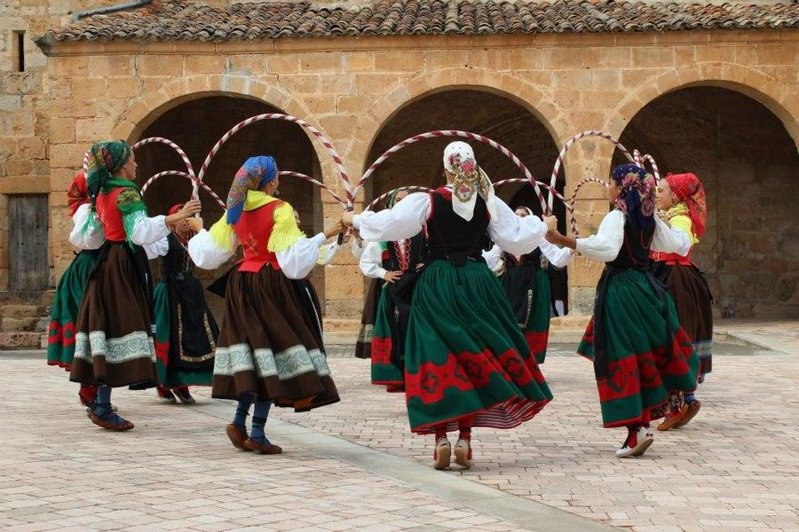

Hoy por hoy, se conoce como el baile a la acción de realizar una danza, mediante el cual, la persona utiliza su cuerpo para ejecutar movimientos al ritmo musical.
El primer grupo es Estampas Burgalesas que es uno de los mas famosos de Burgos junto con Justo del rio o Nuestra señora de las nieves, que son los siguientes grupos simultaneamente.